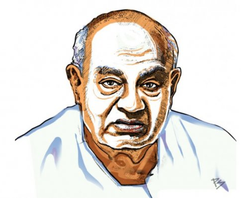

Haradanahalli Doddegowda Deve Gowda is an Indian Politician from the state of Karnataka. He served as the 11th Prime Minister of India from 1 June 1996 to 21 April 1997. He was previously the 14th Chief Minister of Karnataka from 1994 to 1996. He presently is a Member of Parliament in the Rajya Sabha representing Karnataka. He is the National President of the Janata Dal Party.
He was born in a farming family, he joined the Indian National Congress Party in 1953, and remained a member until 1962. He was imprisoned during the Emergency. He became President of the state unit of Janata Dal in 1994, and was considered to be a Driving force in the party's victory in Karnataka chief minister elections.
In the 1996 general elections, no party won enough seats to form a government. When the United Front, a coalition of regional parties, formed the central government with the support of the Congress, Deve Gowda was unexpectedly chosen to head the government and was elected Prime Minister. His prime ministerial tenure lasted for less than a year.
After his Prime ministerial tenure, he was elected to the 12th, 14th, 15th, and 16th Lok Sabha, as Member of Parliament for the Hassan (a district in Karnataka) Lok Sabha constituency. He lost Lok Sabha elections in 2019 from Tumkuru but has been elected to Rajya Sabha since.
He joined the Indian National Congress (O) during the Congress split and served as the Leader of Opposition in the Assembly from March 1972 to March 1976 and again from November 1976 to December 1977. During the Emergency (1975–77), he was imprisoned in the Bangalore Central Jail
read more.
